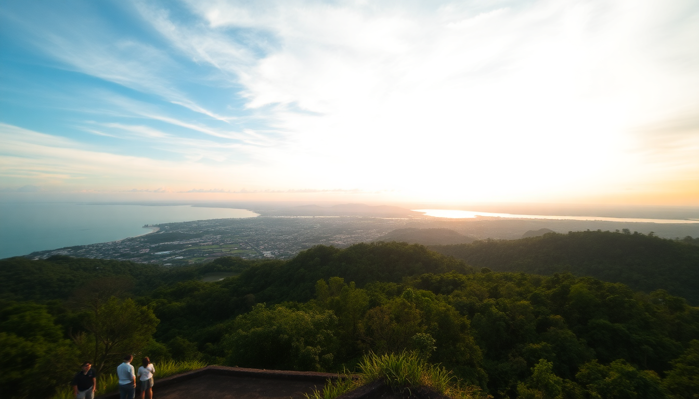

10-Day Indonesia Itinerary: Bali, Yogyakarta, Komodo & Lombok

We landed in Jakarta at midnight, took the first morning flight to Yogyakarta, and spent the next ten days hopping between four islands without a single wasted transfer. This itinerary covers Bali’s rice terraces, Yogyakarta’s temples, Komodo’s dragons, and Lombok’s quiet coves — with Jakarta as the entry gate. It’s aggressive but doable if you book flights in advance and pack light. Here’s exactly how we did it.
Is 10 days enough for Bali, Yogyakarta, Komodo, and Lombok?
Yes, but only if you treat internal flights as connectors and skip the slow ferries. We flew from Jakarta to Yogyakarta (1 hour), then Yogyakarta to Bali (1.5 hours), then Bali to Labuan Bajo (1.5 hours), and finally Labuan Bajo to Lombok (1 hour). Each flight cost between $40 and $80 on Lion Air or Batik Air. The only boat ride was the return from Lombok to Bali (a 2-hour fast ferry from Bangsal Harbor to Padang Bai).
- Fly into Jakarta Soekarno-Hatta (CGK), then immediately connect to Yogyakarta (YIA) — don’t stay in Jakarta unless you have a full day.
- Book all internal flights at least three weeks out; prices double last-minute.
- Pack a 7kg carry-on — checked bags add $15–20 per leg and slow you down.
What’s the best way to see Yogyakarta in 2 days?
Day one: Borobudur at sunrise. We booked the Manohara Hotel sunrise package (they let you climb the temple before the general crowd enters at 8 AM). It cost 450,000 IDR per person and included a torch and tea. The mist over the stupas was worth the 4:30 AM alarm. Day two: Prambanan in late afternoon — the light hits the Hindu spires best around 4 PM. Skip the Ramayana Ballet unless you’re into tourist-scale productions.
- Eat gudeg at Gudeg Yu Djum — jackfruit stewed in coconut milk, served with rice and chicken. It’s sweet, heavy, and essential.
- Stay at The Phoenix Hotel Yogyakarta — an art deco building on Jalan Jenderal Sudirman with a pool that actually cools you down.
- Hire a driver through Gojek (the local ride-hail app) for the day — about 350,000 IDR for 8 hours, including Borobudur and Prambanan.
How do you fit Bali into a 10-day itinerary without rushing?
We landed in Bali from Yogyakarta on day three and spent two nights in Ubud and two nights in Canggu. Ubud for the inland stuff — Tegalalang Rice Terrace (go at 7 AM before the tour buses), Tirta Empul temple (the purification pools are real, not just Instagram bait), and a morning walk along Campuhan Ridge. Canggu for the coast — Batu Bolong Beach for sunset, and Berawa Beach for a surf lesson (we used Bali Green Surf, $25 for 2 hours with a board).
- In Ubud, skip the Monkey Forest — it’s crowded and the monkeys snatch glasses. Instead, hike the Sekumpul Waterfall in northern Bali (2-hour drive, but uncrowded).
- Eat at Warung Sopa in Ubud for vegan nasi campur; in Canggu, Crate Cafe for smashed avocado toast that’s not overpriced.
- Book a GetYourGuide rice terrace walk that includes a local guide — ours explained the subak irrigation system, which made the terraces way more interesting.
Is Komodo National Park worth the detour from Bali?
Yes, but only if you do a 2-day, 1-night liveaboard from Labuan Bajo. Day trips feel rushed — you see the dragons for 30 minutes and then sit on a boat for 4 hours. We booked with Kanawa Island Tours for a small group (8 people) that included Komodo Island (dragons), Padar Island (the three-colored beach view), and Pink Beach (the sand is actually pink from foraminifera). The boat had a basic cabin with a mattress and fan — no AC, but the sea breeze worked.
- Bring reef-safe sunscreen — the park rangers check and will confiscate non-compliant bottles.
- The dragons are not lazy zoo animals; they move fast when hungry. Keep 5 meters back.
- Snorkel at Manta Point — we saw three manta rays within five minutes. The current is strong, so wear a life vest if you’re not a strong swimmer.
What’s the best way to do Lombok on a tight timeline?
We took the morning flight from Labuan Bajo to Lombok and stayed two nights in Senggigi — a quieter alternative to the Gili Islands. Senggigi has the same turquoise water but fewer tourists and cheaper seafood. We spent one day at Sendang Gile Waterfall (a 30-minute drive up Mount Rinjani) and another day snorkeling at Gili Air (a 20-minute public boat from Bangsal Harbor).
- Gili Air has the best balance of “no cars” and “has a decent warung.” Eat grilled fish at Scallywags — it’s the priciest spot on the island but the tuna is fresh.
- Skip Gili Trawangan unless you want a party scene — it’s loud, dusty, and overrun with horse carts.
- Stay at Hotel Tugu Lombok in Senggigi — a boutique hotel with a private beach and a massive breakfast spread. Book direct for the best rate.
FAQ
Is it safe to travel between these islands independently? Yes. Domestic flights are reliable, though delays happen (we had a 2-hour delay on a Batik Air flight from Yogyakarta to Bali). Book morning flights to buffer. The fast boat from Lombok to Bali (via Blue Water Express) runs daily and is safe — just bring a seasickness patch if you’re prone to motion.
How much cash do I need for this itinerary? About $400–500 per person for 10 days, excluding flights and accommodation. Indonesia is cash-heavy outside of hotels. ATMs in Labuan Bajo sometimes run out of money on weekends — withdraw enough in Bali or Yogyakarta before you go.
What’s the best time of year for this route? April to October is dry season. We went in May and had clear skies for Komodo and Lombok. Avoid December to February — the rain in Bali turns rice terraces into mud pits, and Komodo boat trips get canceled due to waves.
Conclusion
- Fly between islands — don’t waste time on ferries. Internal flights are cheap and fast.
- Spend 2 days in Yogyakarta for Borobudur and Prambanan, then 4 days split between Ubud and Canggu.
- Do a 2-day Komodo liveaboard from Labuan Bajo — day trips are too short.
- Use Lombok as a quiet end cap — Senggigi over Gili Trawangan, and book the fast boat back to Bali.
- Carry cash, pack a 7kg carry-on, and book everything at least three weeks ahead.